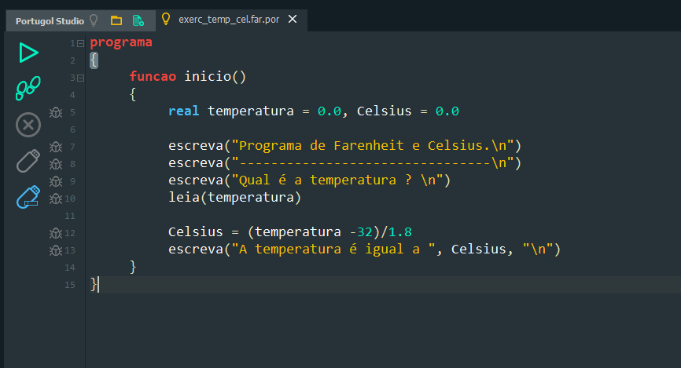

Lógica de Programação
Conceito da linguagem de programação:
Linguagem de Programação é uma linguagem escrita e formal que especifica um conjunto de instruções e regras usadas para gerar programas (software) que pode ser desenvolvido para rodar em um computador, dispositivo móvel ou em qualquer equipamento que permita sua execução, nisso se usa várias linguagens e elas servem para muitos propósitos, como criar um software, outros menos, como controlar um carro ou uma torradeira. Algumas delas são: Javascript, C++, Ruby, PHP, Python, Java são exemplos de linguagens de programação, e existem alguns pontos iniciais importantes quanto a esse pequeno, porém popular, conjunto de linguagens, o Javascript e Java são duas linguagens diferentes, assim como CSS também são. Algumas linguagens do mundo de TI não são linguagens de programação, como HTML e CSS, essas são usadas para estruturação e estilização, respectivamente, de uma página web.
Base quadrada
Calculando Arrays
Bubble Sort
Método de Busca e Ordenação
Portugol
O Portugol é a forma mais utilizada para escrever algoritmos por ser uma linguagem simples e permitir o detalhamento dos algoritmos. Além disso, o Portugol é uma linguagem estruturada, o que significa que ela segue uma sequência lógica de instruções para a resolução de problemas. Isso ajuda os iniciantes a desenvolverem habilidades de pensamento lógico e algoritmos, que são essenciais na programação. Por isso, no começo do ano tivemos várias aulas de inicio sobre portugol para entender o básico sobre a lógica de progrmação depois passamos para o VS Code
